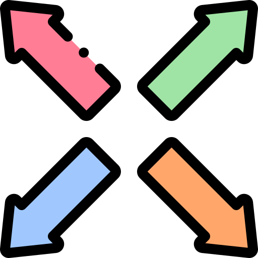

網頁設計 : 前端(Front-End)
我曾經使用HTML+CSS+JS手刻出高仿真大學生論壇Dcard之前端頁面，也使用過Bootstrap做響應式前端開發。
網頁設計 : 後端(Back-End)
我曾經利用PHP的框架Laravel，串聯高仿真大學生論壇Dcard之前端頁面，並串聯資料庫，實作包括會員系統、發文系統、看板系統等等...

網頁設計 : 全端(Full-Stack)
擁有獨立開發之能力，能自學新技術與快速學習框架的能力，透過前後端的結合，創造出無限的可能，締造出美好的未來。